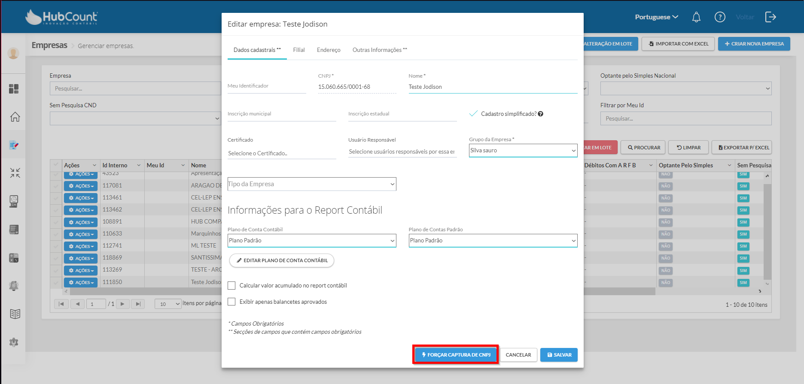
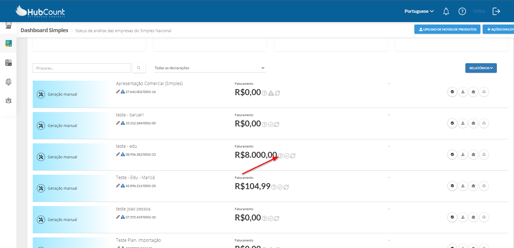
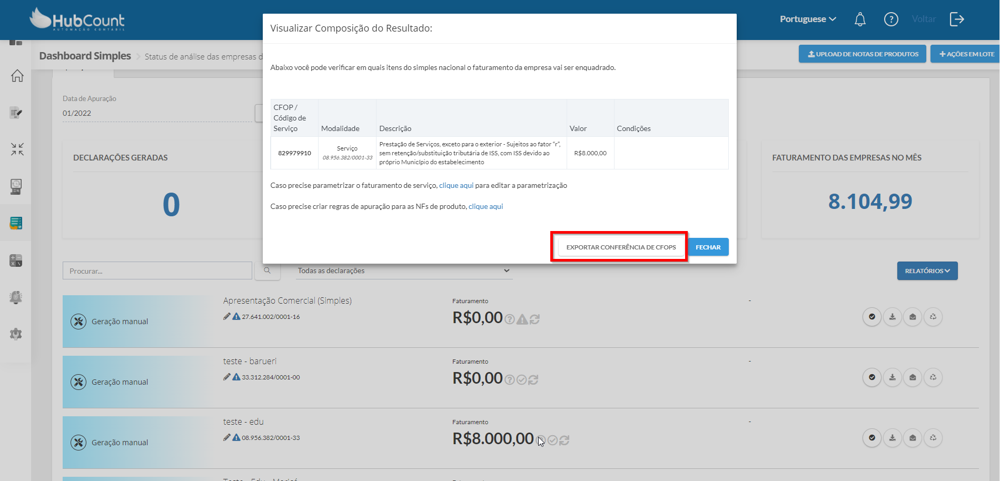
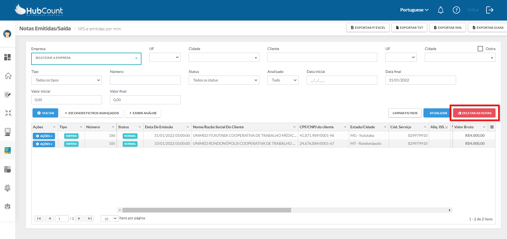
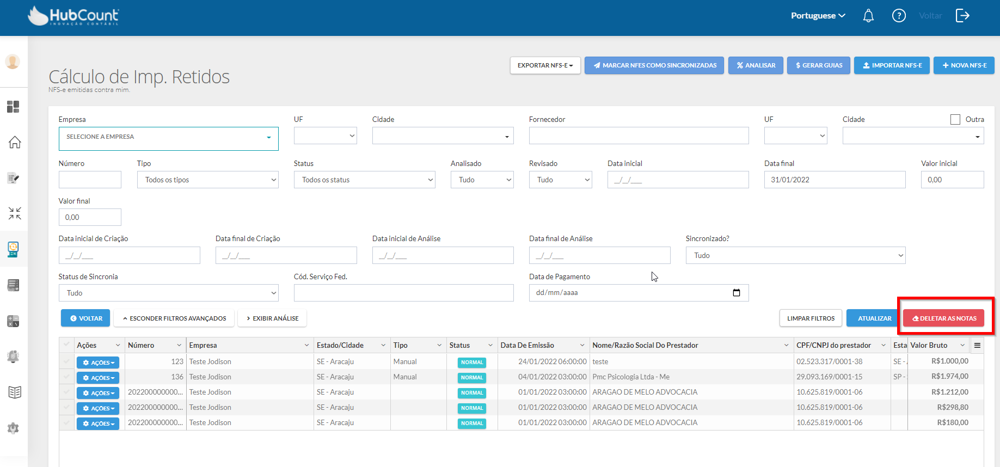

Para ativar a função de SuperUser será necessário apertar as teclas ctrl + alt + s.
Obs. O cliente não pode ter acesso
Na tela de Cadastros → Empresas, quando habilitado essa função de SuperUser temos a opção de forçar captura de CNPJ, onde será atualizado os dados de acordo com o Cartão CNPJ da empresa.
Na tela de Certificados, com essa função habilitada conseguimos visualizar a senha cadastrada no certificado e baixar o arquivo A1.
Na tela de Dashboard do Simples Nacional, ao visualizar Composição do Resultado, conseguimos exportar a planilha de conferência de CFOP.
Clicando na interrogação (?), irá carregar a tela de "Visualizar Composição do Resultado"
Nessa tela, será habilitado a opção de "Exportar Conferência de CFOPs, conforme imagem abaixo:
Na tela de Simples Nacional, Notas Emitidas/Saídas, com a função habilitada, conseguimos deletar as notas.
Na tela de Cálculo de Impostos Retidos, com a função habilitada, conseguimos deletar as notas.
